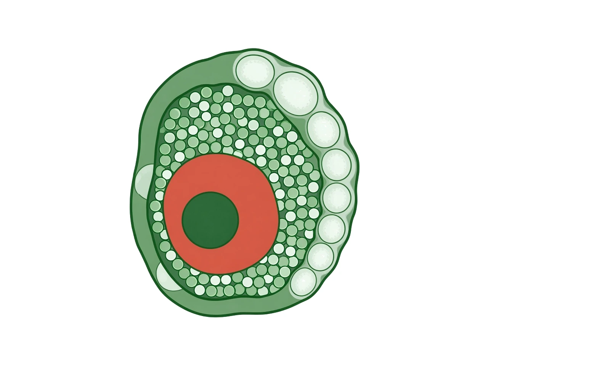
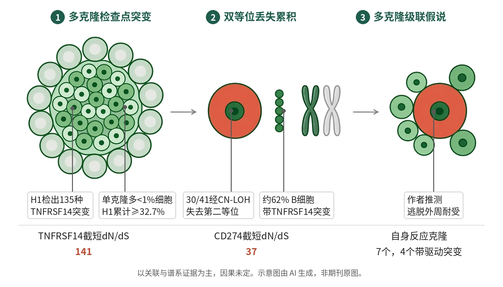

封面示意：甲状腺淋巴聚集区里的一个赤陶红突变B细胞。图片由 AI 生成，非原文图片。
单分子测序显示，桥本甲状腺炎供者H1体内有135种不同TNFRSF14突变，大量B细胞克隆各自失活免疫检查点基因。
主领域：自身免疫与移植免疫 相关：体细胞突变 / 桥本甲状腺炎 / B细胞 / 免疫检查点 / NanoSeq / 外周耐受
关键数据卡
- 研究类型：人体组织体细胞突变测序研究（观察性）
- 样本量 n：14例AITD供者：发现队列3例桥本甲状腺炎（H1–H3），扩展队列6例桥本、5例Graves病
- 对照：非自身免疫对照：20名50岁以上供者的外周血记忆B/T细胞，以及淋巴结、脾、慢性扁桃体炎和非AITD结节性甲状腺肿等数据
- 干预/剂量：方法：全外显子与725基因靶向NanoSeq、激光显微切割、甲基化测序、Xenium空间转录组、单核PTA测序、BCR重组抗体
- 随访：横断面组织研究，不涉及随访
- 主要终点：核心读出：免疫检查点基因体细胞突变的正选择强度（dNdSshm）与独立突变克隆数量
- 主要终点结果：TNFRSF14与CD274截短突变dN/dS为141和37；H1单例检出135种TNFRSF14、59种CD274突变
- 统计量：dNdSshm正选择检验（Q<0.01为显著，Q<0.1为宽松阈值）
- 安全性：不适用（组织测序研究）
- 证据等级：全文
- 核对记录：Europe PMC全文XML（PMC13233322）：Abstract、Main、Results各节、Discussion及图注

- 自身反应B细胞聚集于甲状腺
- 众多克隆各自获得检查点突变
- TNFRSF14双等位丢失与多重驱动
- 作者推测：逃脱耐受、级联放大
示意图概括研究主线：甲状腺淋巴聚集区内众多B细胞克隆各自获得TNFRSF14与CD274失活突变，单个克隆很小但累计占比可观；部分B细胞经CN-LOH双等位丢失并逐步累积多个驱动突变，作者据此提出多克隆级联模型。示意图由 AI 生成，依据原文结果绘制，非期刊原图，不代表分子比例
研究背景与待解问题
自身免疫病影响全球5–10%人口。B、T细胞发育中的体细胞重组会产生能识别自身抗原的淋巴细胞，免疫系统靠多重检查点压制它们，但部分细胞如何逃脱仍不清楚。长期假说认为，免疫调控基因的体细胞突变可让自身反应性淋巴细胞绕过耐受检查点，但受技术所限难以检验。
自身免疫性甲状腺病（AITD）是最常见的自身免疫病之一，包括以甲状腺破坏和甲减为特征的桥本甲状腺炎，以及由刺激性自身抗体导致甲亢的Graves病；桥本甲状腺炎还与MALT淋巴瘤风险升高相关。Nicola等在Nature报告，用单分子测序寻找AITD甲状腺中的体细胞驱动突变。
研究设计
研究先取3例广泛淋巴细胞浸润的桥本甲状腺炎患者（H1–H3）活检，做全外显子NanoSeq（准确的单分子测序），累计双链覆盖3,125 dx，得到28,855个编码突变；随后扩展队列加入6例桥本（H4–H9）和5例Graves病（G1–G5）供者，以725个免疫与淋巴瘤相关基因做靶向测序，14例累计覆盖72,977 dx，用dNdSshm检测正选择。
对照包括20名50岁以上非自身免疫供者的分选外周血记忆B与T细胞，以及淋巴结、脾、慢性扁桃体炎和非AITD结节性甲状腺肿等数据。研究还对3例供者221个淋巴聚集区微区做激光显微切割，并对H1的112个单核做PTA测序（725基因中位314×、86个核全基因组中位18×），重建BCR合成抗体。
核心结果
四个基因强正选择
3例桥本活检的外显子数据中，TNFRSF14（HVEM）、CD274（编码PD-L1）、TET2和TNFAIP3（编码A20）呈强正选择，前两者Q<1×10−15。合并外显子与靶向数据共检出229个TNFRSF14、125个CD274、84个TET2和48个TNFAIP3非同义突变；仅供者H1就有135种不同TNFRSF14突变和59种CD274突变。
单个克隆小，累计占比大
单个克隆很小：TNFRSF14突变中位VAF 0.002（最高0.024），CD274中位0.0006（最高0.019），几乎都不到活检细胞的1%。累加后，H1至少32.7%的细胞带TNFRSF14突变、5.0%带CD274突变；H2与H3的TNFRSF14突变细胞比例为3.0%和5.5%。
扩展队列与对照
扩展数据中15个基因在Q<0.01下受正选择，TNFRSF14与CD274截短突变的dN/dS分别为141和37，远强于其他基因，两者分别在14例中的10例和11例检出。对照数据中这两个基因突变很少且无显著选择（Q>0.1），而TET2、TNFAIP3等部分驱动基因在正常衰老记忆B细胞中也受选择。
驱动突变只见于B细胞
H1的112个核里66个为B细胞、38个为T细胞，驱动突变只见于B细胞：41个细胞含31种TNFRSF14非同义突变（约占H1 B细胞62%），8个细胞含7种CD274突变，6个细胞携带TET2 Q345*。41个TNFRSF14突变B细胞中，30个经CN-LOH、8个经两个独立点突变失去第二个等位基因。
部分突变克隆自身反应
由32个B细胞的完整BCR合成重组抗体后，至少7个克隆识别甲状腺过氧化物酶（6个）或甲状腺球蛋白（1个），其中4个携带驱动突变。激光显微切割还显示，Graves供者G5的一个大淋巴聚集区由两个各自双等位丢失TNFRSF14的大克隆构成。
机制解读
原文实验证明：突变类型指向功能丧失：TNFRSF14与CD274都富集无义、必需剪接位点和移码等截短突变及起始密码子突变，也富集破坏二硫键半胱氨酸的错义突变；TNFRSF14错义突变选择主要落在介导抑制性BTLA相互作用的CRD1。免疫组化证实G5该聚集区TNFRSF14表达缺失。
所有突变B细胞均有体细胞超突变，提示经历过生发中心反应，90%（37/41）TNFRSF14突变B细胞发生类别转换。一个六细胞分支先（可能在骨髓干细胞或祖细胞中）获得TET2 Q345*，再经不同V(D)J重排分出谱系、各自双等位丢失TNFRSF14，说明驱动突变逐步累积，部分克隆多达4–6个驱动突变。
作者推测：作者推测，B细胞上的TNFRSF14与CD274失活可能导致辅助T细胞失调，使B细胞成为不受约束的抗原提呈细胞，持续刺激TPO和TG特异的T细胞。他们提出多克隆级联模型：一个或少数带耐受逃逸突变的自身反应克隆先引发局部弱反应，随后新克隆不断加入而逐步加重。
局限与不确定
- 作者明确表示，结果并非因果的确定证据；尚不清楚这一机制对多数患者的发病是必要还是充分，抑或主要在已形成的疾病中起作用，仍需动物模型中的功能与机制研究。
- 样本量小：全队列仅14例供者，单细胞全基因组数据主要来自H1一名供者；少数未检出TNFRSF14或CD274突变的供者淋巴细胞浸润都较低，检出受浸润程度和测序深度限制。
- 部分驱动基因并非疾病特异：TET2、DNMT3A、TNFAIP3等在正常衰老记忆B细胞中也受选择。自身反应性只测了TPO和TG两种经典抗原，部分BCR序列也可能重建不准。
临床/产业意义
如经证实，这一模型可解释若干临床现象：大量携带甲状腺MALT淋巴瘤驱动突变的克隆，可能解释AITD患者该淋巴瘤风险升高；多克隆级联也符合长期亚临床阶段和表位扩展。
结果与胚系CD274突变和AITD相关、PD-1–PD-L1抑制剂常引发甲状腺自身免疫的现象相呼应；若其他自身免疫病中的活化B细胞也频繁携带驱动突变，或有助解释深度B细胞清除疗法为何对部分疾病有效。
作者、出处与核对
Nicola PA, Lawson ARJ, Tidd A, Imbert J, Ishida Y, Wylie LA, et al. Polyclonal selection of immune checkpoint mutations in thyroid autoimmunity. Nature. 2026 Apr 14. doi: https://doi.org/10.1038/s41586-026-10493-9
证据等级：全文；核对记录：Europe PMC全文XML（PMC13233322）：Abstract、Main、Results各节、Discussion及图注